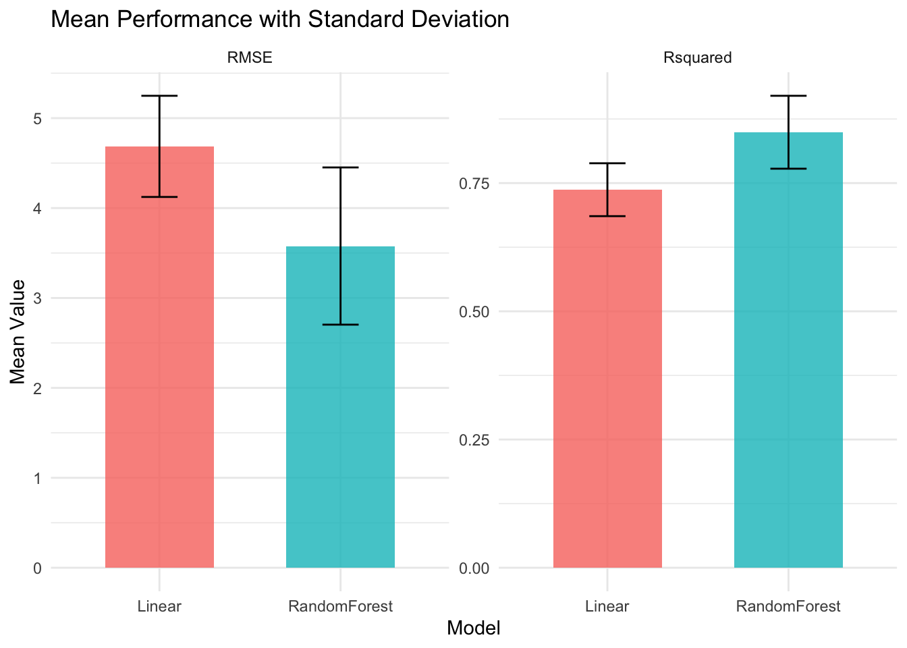

Understand machine learning fundamentals in the data science context
Explore how Generative AI enhances traditional data science workflows
Demonstrate GenAI applications in data collection and knowledge mining
4.1 2.1 Data Visualization Theory and Practices
4.1.1 Theoretical Foundations
1. Grammar of Graphics (Leland Wilkinson) and ggplot2 (Hadley Wickham)
The Grammar of Graphics, developed by Leland Wilkinson, is a framework that describes the building blocks of all statistical graphics. It underpins the design of ggplot2, R’s most popular visualization package, created by Hadley Wickham. This grammar allows users to layer data, aesthetics, geoms, stats, and facets to build complex visualizations from simple components.
2. Cognitive and Perceptual Theory
- Gestalt Principles:
- Similarity: Similar elements are perceived as related. - Proximity: Objects that are close together are grouped. - Enclosure: Boundaries suggest grouping. - Connectedness: Lines or paths imply relationships.
3. Cleveland & McGill’s Empirical Studies:
William Cleveland and Robert McGill empirically ranked graphical perception tasks, showing that position along a common scale is interpreted most accurately, followed by length, angle, area, and color. This hierarchy informs best practices: prefer scatterplots or bar charts over pie charts for quantitative comparisons.
4. Information-to-Ink Ratio (Edward Tufte)
Tufte’s principle encourages maximizing the proportion of “ink” that conveys data, minimizing non-essential elements for clarity and efficiency.
4.1.2 From Theory to Application
Hans Rosling’s Seminal Work:
Hans Rosling’s Gapminder visualizations exemplify the power of dynamic, multi-dimensional graphics. His animated bubble charts (e.g., life expectancy vs. income) use color, size, and motion to tell compelling data stories and reveal trends over time.
Example: Building a Multi-Layered Plot with ggplot2
Show the code
#|message: falselibrary(ggplot2)library(gapminder)ggplot(gapminder, aes(x = gdpPercap, y = lifeExp, size = pop, color = continent)) +geom_point(alpha =0.6) +scale_x_log10() +labs(title ="Life Expectancy vs GDP per Capita",subtitle ="Gapminder: Hans Rosling's Classic Visualization",x ="GDP per Capita (log scale)",y ="Life Expectancy",size ="Population",color ="Continent") +theme_bw()
Can you improve this? Animate it? Or add facets?
Key Takeaways:
Use position and length for quantitative comparisons (Cleveland & McGill).
Layer elements to tell richer stories (Grammar of Graphics).
Remove chartjunk (Tufte).
Use animation or interactivity for temporal or multidimensional data (Rosling).
4.2 2.2 Fundamentals of Data Visualization: Theory and Applications
4.2.1 How Visualization Fundamentals Are Developed
Theory:
Grounded in perception, cognition, and information design.
The Grammar of Graphics provides a systematic approach to constructing and reasoning about graphics.
Cleveland & McGill’s research guides the choice of chart types and encodings.
Applications:
ggplot2 operationalizes the Grammar of Graphics in R.
Real-world examples (Rosling’s Gapminder, Tufte’s minimalist charts) illustrate the impact of design choices on data understanding.
4.2.2 Example: Comparing Chart Types
Chart Type
Best For
Perceptual Strength
Example Use Case
Scatterplot
Correlation
Position
Life expectancy vs. GDP
Bar Chart
Magnitude
Length
Counts by category
Line Chart
Trends over time
Position/Angle
Stock prices, time series
Pie Chart
Part-whole
Angle/Area (weak)
Market share (use sparingly)
4.3 2.3 Machine Learning Fundamentals for Data Science
4.3.1 Core Concepts
Supervised Learning: Regression and classification; model validation, cross-validation.
Unsupervised Learning: Clustering, dimensionality reduction, association rules.
Model Evaluation: Bias-variance tradeoff, training/validation/test splits, performance metrics.
Example: Two Cultures in Practice
Data Modeling Culture (DMC): Linear regression for predicting house prices, focusing on model coefficients and assumptions.
Algorithmic Modeling Culture (AMC): Random forest or neural network for the same task, prioritizing predictive accuracy.
Sample Code: Model Comparison
Show the code
library(caret)library(randomForest)data(Boston, package ="MASS")set.seed(123)train_index <-createDataPartition(Boston$medv, p =0.7, list =FALSE)train_data <- Boston[train_index, ]test_data <- Boston[-train_index, ]ctrl <-trainControl(method ="cv", number =5)lm_model <-train(medv ~ ., data = train_data, method ="lm", trControl = ctrl)rf_model <-train(medv ~ ., data = train_data, method ="rf", trControl = ctrl)results <-resamples(list(Linear = lm_model, RandomForest = rf_model))summary(results)
Call:
summary.resamples(object = results)
Models: Linear, RandomForest
Number of resamples: 5
MAE
Min. 1st Qu. Median Mean 3rd Qu. Max. NA's
Linear 3.061024 3.108807 3.122744 3.362207 3.734839 3.783622 0
RandomForest 1.639452 2.338742 2.441751 2.353005 2.585118 2.759961 0
RMSE
Min. 1st Qu. Median Mean 3rd Qu. Max. NA's
Linear 4.028769 4.314112 4.578507 4.685958 5.115352 5.393048 0
RandomForest 2.078202 3.666595 3.828959 3.577498 3.974632 4.339103 0
Rsquared
Min. 1st Qu. Median Mean 3rd Qu. Max. NA's
Linear 0.6701489 0.6926935 0.7686543 0.7370820 0.7749271 0.7789863 0
RandomForest 0.7775192 0.7850751 0.8375004 0.8491234 0.9223781 0.9231443 0
4.4 Visualizing Model Performance: Linear Regression vs. Random Forest
How to tell which is better? Compares two key metrics: RMSE (Root Mean Squared Error) and R-squared, including error bars to reflect variability across cross-validation folds.
Boxplots for RMSE and R-squared
Show the code
library(caret)library(randomForest)library(ggplot2)library(tidyr)library(dplyr)data(Boston, package ="MASS")set.seed(123)train_index <-createDataPartition(Boston$medv, p =0.7, list =FALSE)train_data <- Boston[train_index, ]test_data <- Boston[-train_index, ]ctrl <-trainControl(method ="cv", number =5)lm_model <-train(medv ~ ., data = train_data, method ="lm", trControl = ctrl)rf_model <-train(medv ~ ., data = train_data, method ="rf", trControl = ctrl)results <-resamples(list(Linear = lm_model, RandomForest = rf_model))# Convert results to a tidy format for ggplot2results_df <-as.data.frame(results$values)results_long <- results_df %>%pivot_longer(cols =-Resample, # Exclude the 'Resample' columnnames_to =c("Model", "Metric"),names_sep ="~",values_to ="Value" )# Filter for RMSE and R-squared onlyresults_long <-subset(results_long, Metric %in%c("RMSE", "Rsquared"))# Plotggplot(results_long, aes(x = Model, y = Value, fill = Model)) +geom_boxplot(alpha =0.7) +facet_wrap(~Metric, scales ="free_y") +labs(title ="Model Performance Comparison: Linear Regression vs Random Forest",x ="Model",y ="Metric Value" ) +theme_minimal() +theme(legend.position ="none")
4.4.0.1 b. Bar Chart with Error Bars
Show the code
# Calculate means and standard deviations for each metric/modellibrary(dplyr)summary_stats <- results_long %>%group_by(Metric, Model) %>%summarize(Mean =mean(Value, na.rm =TRUE),SD =sd(Value, na.rm =TRUE) )# Plot bar chart with error barsggplot(summary_stats, aes(x = Model, y = Mean, fill = Model)) +geom_col(position ="dodge", width =0.6, alpha =0.8) +geom_errorbar(aes(ymin = Mean - SD, ymax = Mean + SD), width =0.2) +facet_wrap(~Metric, scales ="free_y") +labs(title ="Mean Performance with Standard Deviation",x ="Model",y ="Mean Value" ) +theme_minimal() +theme(legend.position ="none")

4.4.1How to Interpret the Plots
Boxplots show the distribution of RMSE and R-squared across cross-validation folds for each model.
Lower RMSE and higher R-squared indicate better performance.
Random Forest typically shows lower RMSE and higher R-squared than Linear Regression, reflecting better predictive accuracy.
Bar charts with error bars provide a summary view of the mean and variability for each metric and model.
4.5 2.4 GenAI with Machine Learning and Applications
4.5.1 Basics of Prompt Engineering
Prompt engineering is the practice of crafting effective inputs (prompts) to guide GenAI models (like LLMs) to produce useful outputs. In data science, this means:
Asking for code generation (“Write R code for a scatterplot of mpg vs hp”)
Requesting data summaries, explanations, or visualizations
Iteratively refining prompts for clarity and specificity
Best Practices: - Be explicit about the task and format you want - Provide context or sample data if possible - Use step-by-step instructions for complex tasks
4.6 Prompt Engineering Workshop
What is Prompt Engineering?
The art of crafting inputs to optimize AI-generated responses.
Helps improve accuracy, relevance, and usability of AI-generated content.
4.7 Why Prompt Engineering Matters
Better prompts = Better AI responses
AI models do not “think”; they predict text based on input.
Well-structured prompts improve clarity, relevance, and accuracy.
4.8 Steps to Improve Prompts
Be Specific → Avoid vague questions.
Add Context → Define roles or perspectives.
Use Step-by-Step Instructions → Encourage reasoning.
Test & Iterate → Adjust prompts based on AI output.
4.9 Example: Improving a Prompt
❌ “Tell me about climate change.”
✅ “Summarize the latest peer-reviewed research on climate change and its impact on global food production.”
4.10 Managing Prompts Effectively
Maintain a personal prompt library.
Track version history for improved iterations.
Design role-based prompts for AI personalization.
4.11 Evaluating AI Responses
Criteria
Description
Accuracy
Does the response match facts?
Clarity
Is the output understandable and well-structured?
Relevance
Does it meet the intended request?
Bias Check
Does the AI introduce misinformation or bias?
4.12 Thought Exercise: Understanding Prompt Structure
Task: Compare good vs. bad prompts
Why do vague prompts generate lower-quality responses?
How does adding context and constraints improve AI output?
Can AI be manipulated with different prompts?
4.13 Hands-On: Improving Basic Prompts
Example Task:
Basic: “Explain economics.”
Improved: “Explain the key principles of macroeconomics with examples from the 21st century.”
4.14 Hands-On: Role-Based Prompting
“You are an AI trained in political science. Explain the impact of AI on democracy.”
“You are a historian in the year 2050. Reflect on how AI changed society.”
4.15 Hands-On: AI-Assisted Research
Tools to Use:
GPT-4, Claude 2, DeepSeek R1
Tasks:
Summarize a research paper.
Generate a structured literature review.
Identify missing data in a dataset.
5 Hands-On: Reverse Engineering AI Responses
Test leading vs. neutral prompts:
“Why is renewable energy the best option for the future?”
“Compare the benefits and drawbacks of renewable energy.”
Discussion: How do responses differ?
6 Summary: Best Practices
✅ Be specific
✅ Use context and step-by-step reasoning
✅ Test & iterate prompts
✅ Evaluate accuracy, clarity, and bias
6.0.1 Prompt Engineering Exercise
Exercise:
Write a prompt to generate R code that: - Loads a CSV file called survey.csv - Plots a histogram of the variable age - Adds a title and labels
Sample Solution:
Prompt:
> “Write R code to load a CSV file named survey.csv, plot a histogram of the age variable, and add appropriate axis labels and a title.”
Expected LLM Output:
Show the code
data <-read.csv("survey.csv")hist(data$age,main ="Distribution of Age",xlab ="Age",ylab ="Frequency",col ="skyblue",border ="white")
6.1 Hands-on Exercise 2: Integrated Data Science Workflow
Challenge: Students work with a real-world dataset to:
Create effective visualizations following design principles
Apply both data modeling and algorithmic modeling approaches
Use simulated GenAI tools for insight generation
Compare traditional vs. AI-enhanced analytical workflows
Document findings using Quarto for reproducible research
6.2 References
Dallas Data Science Academy. 2025. “Integrating Generative AI in Data Science Projects.” Dallas Data Science Academy Blog, January 6. https://dallasdatascienceacademy.org/blog/integrating-generative-ai-in-data-science-projects.
Davenport, Thomas H., Nitin Mittal, and Ilya Goldin. 2024. “The Impact of Generative AI on Data Science.” DATAVERSITY, May 1. https://www.dataversity.net/the-impact-of-generative-ai-on-data-science/.
Decodo. 2025. “How to Use LLM for Data Analysis: A Comprehensive Guide.” Decodo Blog, April 15. https://decodo.com/blog/llm-for-data-analysis.
Domingos, Pedro. 2012. “A Few Useful Things to Know about Machine Learning.” Communications of the ACM 55(10): 78-87.
Few, Stephen. 2012. Show Me the Numbers: Designing Tables and Graphs to Enlighten. 2nd ed. Burlingame, CA: Analytics Press.
Geman, Stuart, Elie Bienenstock, and René Doursat. 1992. “Neural Networks and the Bias/Variance Dilemma.” Neural Computation 4(1): 1-58.
Goodale, Tom. 2025. “Using Generative AI to Help with Statistical Test Selection and Analysis.” MSOR Connections 22(3): 10-17. https://journals.gre.ac.uk/index.php/msor/article/download/1485/pdf/7286.
Graphite. 2025. “Understanding ‘Vibe Coding,’ the Future of AI-Driven Development.” Graphite Blog, July 8. https://graphite.dev/guides/understanding-vibe-coding.
IBM. 2025. “What is Vibe Coding?” IBM Think Topics, April 8. https://www.ibm.com/think/topics/vibe-coding.
James, Gareth, Daniela Witten, Trevor Hastie, and Robert Tibshirani. 2021. An Introduction to Statistical Learning: With Applications in R. 2nd ed. New York: Springer.
Monterail. 2023. “AI-Powered Coding Assistants: Best Practices to Boost Software Development.” Monterail Blog, September 11. https://www.monterail.com/blog/ai-powered-coding-assistants-best-practices.
Murphy, Kevin P. 2022. Probabilistic Machine Learning: An Introduction. Cambridge, MA: MIT Press.
Prompting Guide. 2025. “General Tips for Designing Prompts.” Prompt Engineering Guide, June 7. https://www.promptingguide.ai/introduction/tips.
Slack. 2024. “Collaborative Intelligence: People and AI Working Smarter Together.” Slack Blog, January 15. https://slack.com/blog/collaboration/collaborative-intelligence-people-and-ai-working-smarter-together.
Tufte, Edward R. 2001. The Visual Display of Quantitative Information. 2nd ed. Cheshire, CT: Graphics Press.
Ware, Colin. 2021. Information Visualization: Perception for Design. 4th ed. Cambridge, MA: Morgan Kaufmann.
Source Code
---title: "Chapter 2: Fundamentals - Data Visualization, Machine Learning, and GenAI Integration"---# Learning Objectives- Master data visualization theory and principles- Understand machine learning fundamentals in the data science context- Explore how Generative AI enhances traditional data science workflows- Demonstrate GenAI applications in data collection and knowledge mining## 2.1 Data Visualization Theory and Practices### Theoretical Foundations**1. Grammar of Graphics (Leland Wilkinson) and ggplot2 (Hadley Wickham)** The Grammar of Graphics, developed by Leland Wilkinson, is a framework that describes the building blocks of all statistical graphics. It underpins the design of ggplot2, R’s most popular visualization package, created by Hadley Wickham. This grammar allows users to layer data, aesthetics, geoms, stats, and facets to build complex visualizations from simple components.**2. Cognitive and Perceptual Theory** - **Gestalt Principles:** - *Similarity*: Similar elements are perceived as related. - *Proximity*: Objects that are close together are grouped. - *Enclosure*: Boundaries suggest grouping. - *Connectedness*: Lines or paths imply relationships.**3. Cleveland & McGill’s Empirical Studies:** William Cleveland and Robert McGill empirically ranked graphical perception tasks, showing that position along a common scale is interpreted most accurately, followed by length, angle, area, and color. This hierarchy informs best practices: prefer scatterplots or bar charts over pie charts for quantitative comparisons.**4. Information-to-Ink Ratio (Edward Tufte)** Tufte’s principle encourages maximizing the proportion of “ink” that conveys data, minimizing non-essential elements for clarity and efficiency.### From Theory to Application- **Hans Rosling’s Seminal Work:** Hans Rosling’s Gapminder visualizations exemplify the power of dynamic, multi-dimensional graphics. His animated bubble charts (e.g., life expectancy vs. income) use color, size, and motion to tell compelling data stories and reveal trends over time.- **Example: Building a Multi-Layered Plot with ggplot2**```{r}#|message: falselibrary(ggplot2)library(gapminder)ggplot(gapminder, aes(x = gdpPercap, y = lifeExp, size = pop, color = continent)) +geom_point(alpha =0.6) +scale_x_log10() +labs(title ="Life Expectancy vs GDP per Capita",subtitle ="Gapminder: Hans Rosling's Classic Visualization",x ="GDP per Capita (log scale)",y ="Life Expectancy",size ="Population",color ="Continent") +theme_bw()```**Can you improve this? Animate it? Or add facets?****Key Takeaways:**- Use position and length for quantitative comparisons (Cleveland & McGill).- Layer elements to tell richer stories (Grammar of Graphics).- Remove chartjunk (Tufte).- Use animation or interactivity for temporal or multidimensional data (Rosling).## 2.2 Fundamentals of Data Visualization: Theory and Applications### How Visualization Fundamentals Are Developed- **Theory:** - Grounded in perception, cognition, and information design. - The Grammar of Graphics provides a systematic approach to constructing and reasoning about graphics. - Cleveland & McGill’s research guides the choice of chart types and encodings.- **Applications:** - ggplot2 operationalizes the Grammar of Graphics in R. - Real-world examples (Rosling’s Gapminder, Tufte’s minimalist charts) illustrate the impact of design choices on data understanding.### Example: Comparing Chart Types| Chart Type | Best For | Perceptual Strength | Example Use Case ||--------------------|-------------------|-------------------------|-----------------------------|| Scatterplot | Correlation | Position | Life expectancy vs. GDP || Bar Chart | Magnitude | Length | Counts by category || Line Chart | Trends over time | Position/Angle | Stock prices, time series || Pie Chart | Part-whole | Angle/Area (weak) | Market share (use sparingly)|## 2.3 Machine Learning Fundamentals for Data Science### Core Concepts- **Supervised Learning:** Regression and classification; model validation, cross-validation.- **Unsupervised Learning:** Clustering, dimensionality reduction, association rules.- **Model Evaluation:** Bias-variance tradeoff, training/validation/test splits, performance metrics.**Example: Two Cultures in Practice**- *Data Modeling Culture (DMC):* Linear regression for predicting house prices, focusing on model coefficients and assumptions.- *Algorithmic Modeling Culture (AMC):* Random forest or neural network for the same task, prioritizing predictive accuracy.**Sample Code: Model Comparison**```{r}#| message: falselibrary(caret)library(randomForest)data(Boston, package ="MASS")set.seed(123)train_index <-createDataPartition(Boston$medv, p =0.7, list =FALSE)train_data <- Boston[train_index, ]test_data <- Boston[-train_index, ]ctrl <-trainControl(method ="cv", number =5)lm_model <-train(medv ~ ., data = train_data, method ="lm", trControl = ctrl)rf_model <-train(medv ~ ., data = train_data, method ="rf", trControl = ctrl)results <-resamples(list(Linear = lm_model, RandomForest = rf_model))summary(results)```## Visualizing Model Performance: Linear Regression vs. Random ForestHow to tell which is better? Compares two key metrics: RMSE (Root Mean Squared Error) and R-squared, including error bars to reflect variability across cross-validation folds.a. Boxplots for RMSE and R-squared```{r}#| message: falselibrary(caret)library(randomForest)library(ggplot2)library(tidyr)library(dplyr)data(Boston, package ="MASS")set.seed(123)train_index <-createDataPartition(Boston$medv, p =0.7, list =FALSE)train_data <- Boston[train_index, ]test_data <- Boston[-train_index, ]ctrl <-trainControl(method ="cv", number =5)lm_model <-train(medv ~ ., data = train_data, method ="lm", trControl = ctrl)rf_model <-train(medv ~ ., data = train_data, method ="rf", trControl = ctrl)results <-resamples(list(Linear = lm_model, RandomForest = rf_model))# Convert results to a tidy format for ggplot2results_df <-as.data.frame(results$values)results_long <- results_df %>%pivot_longer(cols =-Resample, # Exclude the 'Resample' columnnames_to =c("Model", "Metric"),names_sep ="~",values_to ="Value" )# Filter for RMSE and R-squared onlyresults_long <-subset(results_long, Metric %in%c("RMSE", "Rsquared"))# Plotggplot(results_long, aes(x = Model, y = Value, fill = Model)) +geom_boxplot(alpha =0.7) +facet_wrap(~Metric, scales ="free_y") +labs(title ="Model Performance Comparison: Linear Regression vs Random Forest",x ="Model",y ="Metric Value" ) +theme_minimal() +theme(legend.position ="none")```#### b. Bar Chart with Error Bars```{r}#| message: false# Calculate means and standard deviations for each metric/modellibrary(dplyr)summary_stats <- results_long %>%group_by(Metric, Model) %>%summarize(Mean =mean(Value, na.rm =TRUE),SD =sd(Value, na.rm =TRUE) )# Plot bar chart with error barsggplot(summary_stats, aes(x = Model, y = Mean, fill = Model)) +geom_col(position ="dodge", width =0.6, alpha =0.8) +geom_errorbar(aes(ymin = Mean - SD, ymax = Mean + SD), width =0.2) +facet_wrap(~Metric, scales ="free_y") +labs(title ="Mean Performance with Standard Deviation",x ="Model",y ="Mean Value" ) +theme_minimal() +theme(legend.position ="none")```### **How to Interpret the Plots**- **Boxplots** show the distribution of RMSE and R-squared across cross-validation folds for each model. - Lower RMSE and higher R-squared indicate better performance. - Random Forest typically shows lower RMSE and higher R-squared than Linear Regression, reflecting better predictive accuracy.- **Bar charts with error bars** provide a summary view of the mean and variability for each metric and model.## 2.4 GenAI with Machine Learning and Applications### Basics of Prompt EngineeringPrompt engineering is the practice of crafting effective inputs (prompts) to guide GenAI models (like LLMs) to produce useful outputs. In data science, this means:- Asking for code generation (“Write R code for a scatterplot of mpg vs hp”)- Requesting data summaries, explanations, or visualizations- Iteratively refining prompts for clarity and specificity**Best Practices:**- Be explicit about the task and format you want- Provide context or sample data if possible- Use step-by-step instructions for complex tasks## Prompt Engineering Workshop:::{.fragment}- **What is Prompt Engineering?**- The art of crafting inputs to optimize AI-generated responses.- Helps improve accuracy, relevance, and usability of AI-generated content.:::## Why Prompt Engineering Matters:::{.fragment}- **Better prompts = Better AI responses**- AI models do not "think"; they predict text based on input.- Well-structured prompts improve **clarity, relevance, and accuracy**.:::## Steps to Improve Prompts:::{.fragment}1. **Be Specific** → Avoid vague questions.2. **Add Context** → Define roles or perspectives.3. **Use Step-by-Step Instructions** → Encourage reasoning.4. **Test & Iterate** → Adjust prompts based on AI output.:::## Example: Improving a Prompt:::{.fragment}❌ *"Tell me about climate change."* ✅ *"Summarize the latest peer-reviewed research on climate change and its impact on global food production."*:::## Managing Prompts Effectively:::{.fragment}- Maintain a **personal prompt library**.- Track **version history** for improved iterations.- Design **role-based prompts** for AI personalization.:::## Evaluating AI Responses:::{.fragment}| Criteria | Description ||-----------------|-------------|| **Accuracy** | Does the response match facts? || **Clarity** | Is the output understandable and well-structured? || **Relevance** | Does it meet the intended request? || **Bias Check** | Does the AI introduce misinformation or bias? |:::## Thought Exercise: Understanding Prompt Structure**Task:** Compare **good vs. bad prompts**:::{.fragment}- Why do vague prompts generate lower-quality responses?- How does adding **context and constraints** improve AI output?- Can AI be **manipulated** with different prompts?:::## Hands-On: Improving Basic Prompts**Example Task:**:::{.fragment}- Basic: *"Explain economics."*- Improved: *"Explain the key principles of macroeconomics with examples from the 21st century."*:::## Hands-On: Role-Based Prompting:::{.fragment}- *"You are an AI trained in political science. Explain the impact of AI on democracy."*- *"You are a historian in the year 2050. Reflect on how AI changed society."*:::## Hands-On: AI-Assisted Research**Tools to Use:** :::{.fragment}- **GPT-4, Claude 2, DeepSeek R1**- **Tasks:** - Summarize a research paper. - Generate a structured literature review. - Identify missing data in a dataset.:::# Hands-On: Reverse Engineering AI Responses:::{.fragment}- **Test leading vs. neutral prompts:** - *"Why is renewable energy the best option for the future?"* - *"Compare the benefits and drawbacks of renewable energy."* - **Discussion:** How do responses differ?:::# Summary: Best Practices:::{.fragment}✅ Be **specific** ✅ Use **context** and **step-by-step reasoning** ✅ **Test & iterate** prompts ✅ Evaluate **accuracy, clarity, and bias**:::### Prompt Engineering Exercise**Exercise:** Write a prompt to generate R code that:- Loads a CSV file called `survey.csv`- Plots a histogram of the variable `age`- Adds a title and labels**Sample Solution:**Prompt: > "Write R code to load a CSV file named `survey.csv`, plot a histogram of the `age` variable, and add appropriate axis labels and a title."Expected LLM Output:```{r}#| eval: falsedata <-read.csv("survey.csv")hist(data$age,main ="Distribution of Age",xlab ="Age",ylab ="Frequency",col ="skyblue",border ="white")```## Hands-on Exercise 2: Integrated Data Science Workflow**Challenge:** Students work with a real-world dataset to:1. Create effective visualizations following design principles2. Apply both data modeling and algorithmic modeling approaches3. Use simulated GenAI tools for insight generation4. Compare traditional vs. AI-enhanced analytical workflows5. Document findings using Quarto for reproducible research## ReferencesDallas Data Science Academy. 2025. "Integrating Generative AI in Data Science Projects." *Dallas Data Science Academy Blog*, January 6. https://dallasdatascienceacademy.org/blog/integrating-generative-ai-in-data-science-projects.Davenport, Thomas H., Nitin Mittal, and Ilya Goldin. 2024. "The Impact of Generative AI on Data Science." *DATAVERSITY*, May 1. https://www.dataversity.net/the-impact-of-generative-ai-on-data-science/.Decodo. 2025. "How to Use LLM for Data Analysis: A Comprehensive Guide." *Decodo Blog*, April 15. https://decodo.com/blog/llm-for-data-analysis.Domingos, Pedro. 2012. "A Few Useful Things to Know about Machine Learning." *Communications of the ACM* 55(10): 78-87.Few, Stephen. 2012. *Show Me the Numbers: Designing Tables and Graphs to Enlighten*. 2nd ed. Burlingame, CA: Analytics Press.Geman, Stuart, Elie Bienenstock, and René Doursat. 1992. "Neural Networks and the Bias/Variance Dilemma." *Neural Computation* 4(1): 1-58.Goodale, Tom. 2025. "Using Generative AI to Help with Statistical Test Selection and Analysis." *MSOR Connections* 22(3): 10-17. https://journals.gre.ac.uk/index.php/msor/article/download/1485/pdf/7286.Graphite. 2025. "Understanding 'Vibe Coding,' the Future of AI-Driven Development." *Graphite Blog*, July 8. https://graphite.dev/guides/understanding-vibe-coding.IBM. 2025. "What is Vibe Coding?" *IBM Think Topics*, April 8. https://www.ibm.com/think/topics/vibe-coding.James, Gareth, Daniela Witten, Trevor Hastie, and Robert Tibshirani. 2021. *An Introduction to Statistical Learning: With Applications in R*. 2nd ed. New York: Springer.Monterail. 2023. "AI-Powered Coding Assistants: Best Practices to Boost Software Development." *Monterail Blog*, September 11. https://www.monterail.com/blog/ai-powered-coding-assistants-best-practices.Murphy, Kevin P. 2022. *Probabilistic Machine Learning: An Introduction*. Cambridge, MA: MIT Press.Prompting Guide. 2025. "General Tips for Designing Prompts." *Prompt Engineering Guide*, June 7. https://www.promptingguide.ai/introduction/tips.Slack. 2024. "Collaborative Intelligence: People and AI Working Smarter Together." *Slack Blog*, January 15. https://slack.com/blog/collaboration/collaborative-intelligence-people-and-ai-working-smarter-together.Tufte, Edward R. 2001. *The Visual Display of Quantitative Information*. 2nd ed. Cheshire, CT: Graphics Press.Ware, Colin. 2021. *Information Visualization: Perception for Design*. 4th ed. Cambridge, MA: Morgan Kaufmann.